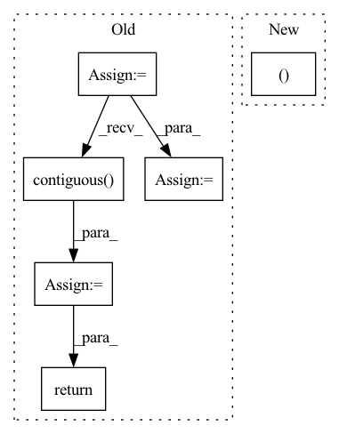

Pattern ID :288

Before Change
self.stride = stride
def forward(self, x):
stride = self.stride
assert (x.data.dim() == 4)
B = x.data.size(0)
C = x.data.size(1)
H = x.data.size(2)
W = x.data.size(3)
ws = stride
hs = stride
x = x.view(B, C, H, 1, W, 1).expand(B, C, H, stride, W, stride).contiguous().view(B, C, H * stride, W * stride)
return x
class Conv_Bn_Activation(nn.Module):
After Change
def forward(self, x, target_size):
assert (x.data.dim() == 4)
_, _, H, W = target_size
return F.interpolate(x, size=(H, W), mode="nearest")
In pattern: SUPERPATTERN
Frequency: 3
Non-data size: 6
Instances
Fragment ID: 968934
Project Name: tianxiaomo/pytorch-yolov4
Commit Name: 9d415b48fb7e1aad2ec47d1b51695fbd3d2b5cd1
Time: 2020-05-23
Author: mark.weber1@rwth-aachen.de
File Name: models.py
M Class Name: Upsample
N Class Name: Upsample
M Method Name: forward(3)
N Method Name: forward(2)
M Parent Class: nn.Module
N Parent Class: nn.Module
M File Name: models.py
N File Name: models.py
M Start Line: 20
M End Line: 29
N Start Line: 19
N End Line: 22
'>
Before Change
outputs = []
alignments = []
stop_outputs = []
t = 0
memory_input = initial_memory
while True:
if t > 0:
if greedy:
memory_input = outputs[-1]
else:
// combine prev. model output and prev. real target
// memory_input = torch.div(outputs[-1] + memory[t-1], 2.0)
// add a random noise
// noise = torch.autograd.Variable(
// memory_input.data.new(memory_input.size()).normal_(0.0, 0.5))
// memory_input = memory_input + noise
memory_input = memory[t-1]
// Prenet
processed_memory = self.prenet(memory_input)
// Attention RNN
attention_rnn_hidden, current_context_vec, alignment = self.attention_rnn(
processed_memory, current_context_vec, attention_rnn_hidden,
inputs)
// Concat RNN output and attention context vector
decoder_input = self.project_to_decoder_in(
torch.cat((attention_rnn_hidden, current_context_vec), -1))
// Pass through the decoder RNNs
for idx in range(len(self.decoder_rnns)):
decoder_rnn_hiddens[idx] = self.decoder_rnns[idx](
decoder_input, decoder_rnn_hiddens[idx])
// Residual connectinon
decoder_input = decoder_rnn_hiddens[idx] + decoder_input
output = decoder_input
stop_token_input = decoder_input
// stop token prediction
stop_token_input = torch.cat((output, current_context_vec), -1)
stop_output = self.stop_token(stop_token_input)
// predict mel vectors from decoder vectors
output = self.proj_to_mel(output)
outputs += [output]
alignments += [alignment]
stop_outputs += [stop_output]
t += 1
if (not greedy and self.training) or (greedy and memory is not None):
if t >= T_decoder:
break
else:
if t > 1 and is_end_of_frames(output, self.eps):
break
elif t > self.max_decoder_steps:
print(" !! Decoder stopped with "max_decoder_steps". \
Something is probably wrong.")
break
assert greedy or len(outputs) == T_decoder
// Back to batch first
alignments = torch.stack(alignments).transpose(0, 1)
outputs = torch.stack(outputs).transpose(0, 1).contiguous()
stop_outputs = torch.stack(stop_outputs).transpose(0, 1).contiguous()
return outputs, alignments, stop_outputs
def is_end_of_frames(output, eps=0.2): /ǖ.2
After Change
alignments = torch.stack(alignments).transpose(0, 1)
outputs = torch.stack(outputs).transpose(0, 1).contiguous()
return outputs, alignments
def is_end_of_frames(output, eps=0.2): /ǖ.2
return (output.data <= eps).all()
'>
Fragment ID: 968932
Project Name: coqui-ai/tts
Commit Name: a925c9c75cdc699336b1c1b012db9b2e08bc23da
Time: 2018-03-22
Author: egolge@mozilla.com
File Name: layers/tacotron.py
M Class Name: Decoder
N Class Name: Decoder
M Method Name: forward(3)
N Method Name: forward(3)
M Parent Class: nn.Module
N Parent Class: nn.Module
M File Name: layers/tacotron.py
N File Name: layers/tacotron.py
M Start Line: 280
M End Line: 359
N Start Line: 346
N End Line: 349
'>
Before Change
// self.training |= self.export
if self.export:
for i in range(self.nl):
x[i] = self.m[i](x[i])
bs, _, ny, nx = x[i].shape // x(bs,48,20,20) to x(bs,3,20,20,16)
x[i] = x[i].view(bs, self.na, self.no, ny, nx).permute(0, 1, 3, 4, 2).contiguous()
return x
if self.export_cat:
for i in range(self.nl):
x[i] = self.m[i](x[i]) // conv
After Change
if self.grid[i].shape[2:4] != x[i].shape[2:4]:
// self.grid[i] = self._make_grid(nx, ny).to(x[i].device)
self.grid[i], self.anchor_grid[i] = self._make_grid_new(nx, ny,i)
y = torch.full_like(x[i], 0)
y = y + torch.cat((x[i][:, :, :, :, 0:5].sigmoid(), torch.cat((x[i][:, :, :, :, 5:15], x[i][:, :, :, :, 15:15+self.nc].sigmoid()), 4)), 4)
'>
Fragment ID: 968933
Project Name: deepcam-cn/yolov5-face
Commit Name: dce28069b579d807dac4e694e87d3c0ee3f777ec
Time: 2021-12-17
Author: lipengbo@kanzhun.com
File Name: models/yolo.py
M Class Name: Detect
N Class Name: Detect
M Method Name: forward(2)
N Method Name: forward(2)
M Parent Class: nn.Module
N Parent Class: nn.Module
M File Name: models/yolo.py
N File Name: models/yolo.py
M Start Line: 50
M End Line: 64
N Start Line: 49
N End Line: 56